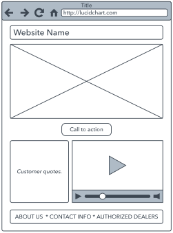

O site será um espaço dedicado ao tema dos vícios, abordando histórias de superação, desafios enfrentados e dicas para quem deseja vencer um vício. Ele funcionará como uma comunidade interativa, onde os usuários podem compartilhar suas experiências anonimamente ou de forma identificada, promovendo apoio e conscientização.
Público-Alvo
O site é voltado para pessoas que estão enfrentando um vício e buscam apoio, bem como para aqueles que já superaram um vício e desejam compartilhar suas histórias para ajudar outras pessoas. Além disso, também pode interessar a familiares, amigos e profissionais que lidam com dependência e querem entender melhor essa realidade.
Estrutura do site
Descreva como você vai explorar o tema transversal de sua escolha, ou seja,
qual será a estrutura do seu site. Por exemplo, se você escolher educação no trânsito
, você poderia dividir esse tópico como a seguir.
Exemplo de Estrutura do Site
Nosso site sobre Educação no Trânsito será organizado em 4 seções principais:
Seção 1: Legislação
Sinalização de trânsito
Direitos e deveres do pedestre
Multas mais comuns
Seção 2: Prevenção de Acidentes
Uso correto do cinto de segurança
Perigos do celular ao volante
Direção defensiva
Seção 3: Dados Estatísticos
Acidentes na região
Comparativo histórico
Gráficos interativos
Seção 4: Interatividade
Quiz de conhecimentos
Simulador de multas
Mapa de rotas seguras
Por Que Essa Estrutura?
Essa organização permite:
Abordar o tema de forma progressiva (do teórico ao prático)
Engajar diferentes perfis de usuários (visual, cinestésico, etc)
Integrar os eixos tecnológicos do curso (interatividade com JS)
2. Wireframes
Inclua aqui os wireframes do seu site como figuras,
como nos exemplos abaixo.
Você pode aprender mais sobre os wireframes na internet ou
por meio desta página,
criada com o auxílio do Deep Seek.
Exemplo de wireframe

Exemplo de wireframe Exemplo de wireframe